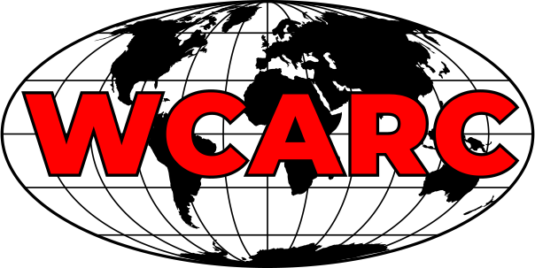

The WCARC 6m, 2m, 1.25m, 70cm, 35cm and 23cm beacons are operational.
West Carleton Amateur Radio Club

Home Page
Our next regular meeting will be at 7:00pm on Monday, November 19 at our
regular location:
Sobeys
840 March Road in Kanata North.
Our speaker will be David Conn (VE3KL) with
"Helping Blind Hams with Modern Transceivers and Radio Systems."
Please join us.